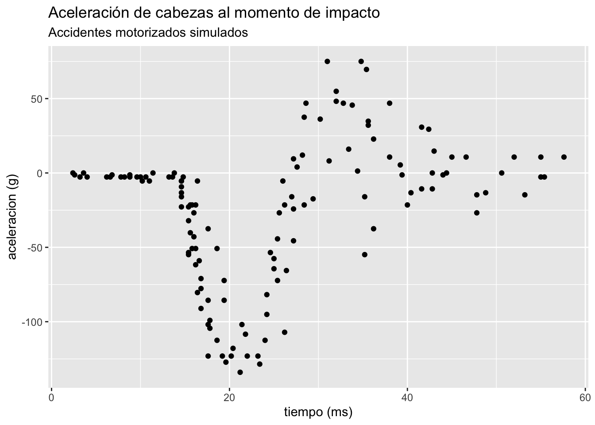
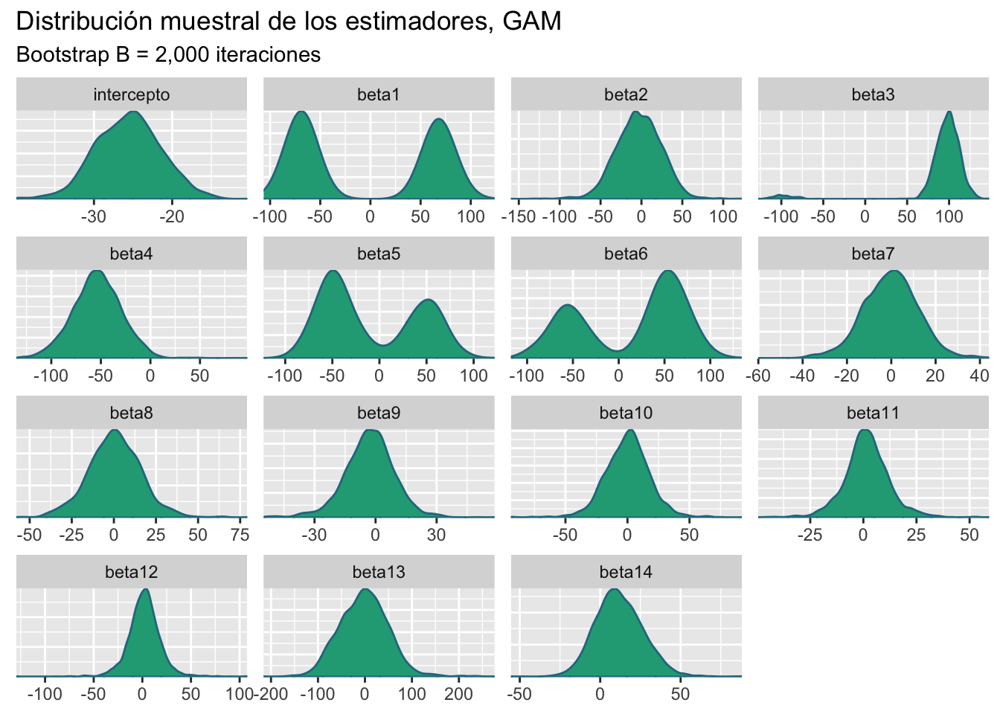
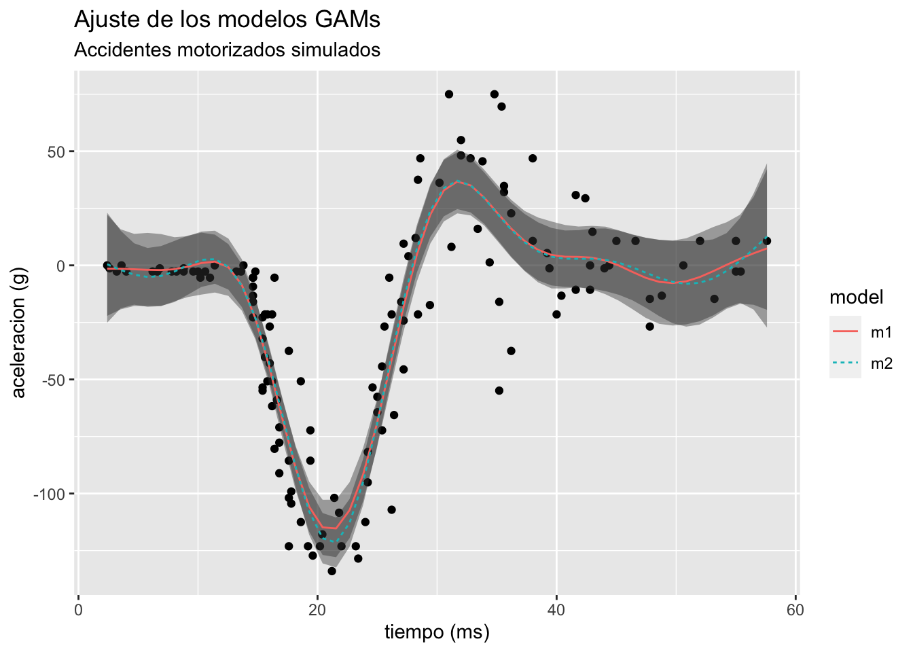
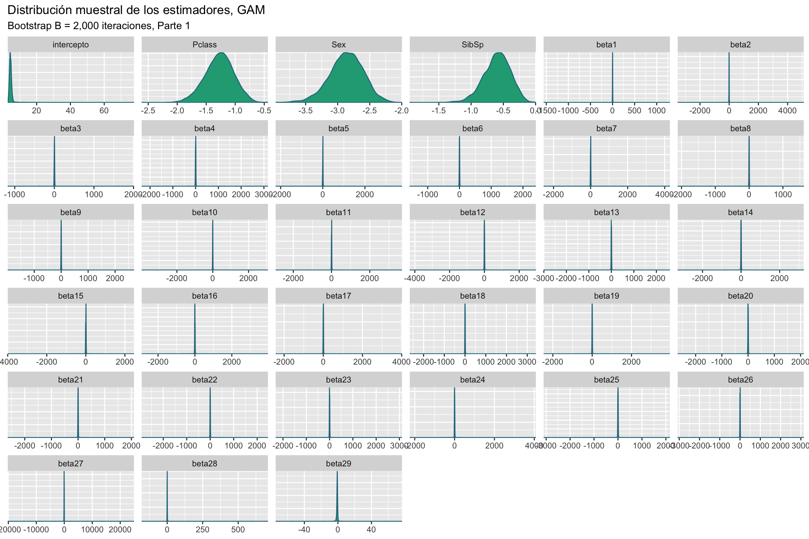

Code
library(mgcv)
library(caret)
library(tidymv)
library(GGally)
library(ggplot2)
library(flextable)
library(bayesplot)
bayesplot_theme_set(theme_grey())
data("mcycle",package = "MASS")
load("Titanic.RData")GAMs logísticos
Asael Alonzo Matamoros
November 24, 2022
Este post presenta un análisis la base Titanic usando un modelo aditivo generalizado logístico.
Los modelos aditivos generalizados (GAMs) relacionan forma no lineal al conjunto de v.a. independientes Z = \{Z_1,Z_2,\ldots,Z_n\}, tal que Z_i = (Y_i,X_i) \in \mathbb R^{d+1}. La colección Z sigue un GAM si:
Y_i \sim \mathscr{F}_\varepsilon (\theta_i), \quad \text{y } g(\theta_i) = \sum_{s = 1}^mf_s(X_i), Donde:
\mathscr{F}_\varepsilon representa la familia exponencial.
El conjunto \theta = \{\theta_i\} representa una colección de parámetros de locación.
g: \mathbb R \to \mathbb R es una función diferenciable e invertible, conocida como la función de enlace.
\beta \in \mathbb R^{d+1} es el vector de coeficientes de regresión o importancias.
las funciones f_s:\mathbb{R}^d \to \mathbb R son suaves y diferenciables, de tal forma que, se pueden aproximar mediante la siguiente expresión:
f_s(X) \approx \sum^K_{k = 1}\beta_{k,s} b_{k,s}(X),
Dado que
B_s(X) = [b_{1,s}(X),b_{2,s}(X),\ldots,b_{K,s}(X)], es una base, entonces los b_{k,s}(X) son una colección linealmente independiente en un espacio de funciones (L_2). Este resultado implica que estimar la función no lineal f_s(X) es equivalente a resolver el problema de regresión lineal:
\hat f_s(X) = B_s(X) \hat \beta. Este tipo de modelos tiene dos limitantes, el primero es seleccionar una base adecuada, y segundo elegir el número de óptimo de elementos en la base K. Si K es muy grande el modelo sobre-ajusta los datos (overfitting). Una solución es penalizar el suavizado con:
P(f) = \int \partial^2f^2(x) dx. Por lo tanto, el problema de optimización se escribe como:
\hat \beta_s = \arg \min_\beta ||g^{-1}(y) - f_s(X)||^2 + \lambda P(f), \hat \beta_s = \arg \min_\beta || g^{-1}(y) - B_s(X)\beta ||^2 + \lambda \beta^tS\beta.
Donde S = \int B_s^t(X)B_s(X) dx, es la penalización. Note que el problema de optimización anterior es equivalente a resolver un problema de regresión lineal penalizado, que a su vez puede ser re-escrito como un problema de regresión lineal completo.
La base de datos mcycles presenta una serie de mediciones de la aceleración de cabezas en un accidente motorizado simulado para probar la resistencia al impacto en cascos. La base de datos contiene las siguiente variables:
accel: La aceleración obtenida al momento de impacto. (Dependiente)
times: El tiempo previo al impacto. (ms)
ggplot(mcycle,aes(times, accel))+
geom_point()+
labs(title = "Aceleración de cabezas al momento de impacto",
subtitle = "Accidentes motorizados simulados",
y = "aceleracion (g)",x = "tiempo (ms)")
Para medir la relación de la aceleración obtenida de los accidentes utilizaremos un GAM normal tal que:
accel_i \sim N(\mu_i,\sigma^2), \quad g(\mu_i) = \mu_i, \text{ y } \mu_i = f(times_i). Donde f(times) = \sum^k_{t = 1}\beta_t b_t(times) representa aproximación por base Splines para la media del modelo. El siguiente código limpia la base de datos para obtener las variables de interés
Family: gaussian
Link function: identity
Formula:
accel ~ s(times, k = 15, bs = "fs", m = 2)
Parametric coefficients:
Estimate Std. Error t value Pr(>|t|)
(Intercept) -25.546 1.965 -13 <2e-16 ***
---
Signif. codes: 0 '***' 0.001 '**' 0.01 '*' 0.05 '.' 0.1 ' ' 1
Approximate significance of smooth terms:
edf Ref.df F p-value
s(times) 10.44 12.18 38.07 <2e-16 ***
---
Signif. codes: 0 '***' 0.001 '**' 0.01 '*' 0.05 '.' 0.1 ' ' 1
R-sq.(adj) = 0.78 Deviance explained = 79.8%
GCV = 561.61 Scale est. = 513.3 n = 133El resumen del modelo presenta un análisis de significancia para el vector de parámetros \hat \beta, que en este caso es de dimensión d = 15, y que debido al TLC se distribuye normal multivariada. El siguiente código genera una muestra Bootstrap para cada uno de los parámetros del modelo M_1.
gam_boots = function(dat,B = 2000){
n = dim(dat)[1]
est = NULL
for (i in 1:B) {
si = sample(x = 1:n,size = n,replace = TRUE)
mli = gam(accel[si] ~ s(times[si],k = 15,bs = "fs",m = 2),data = dat)
ci = as.array(mli$coefficients)
est = rbind(est,ci)
}
# Estética
cn = dim(est)[2]-1
colnames(est) = c("intercepto",paste0("beta",1:cn))
return(est)
}Obtenemos una muestra Bootstrap para los estimadores \hat \beta de tamaño B = 2,000 repeticiones.
btp = gam_boots(dat = mcycle,B = 2000)
color_scheme_set("viridis")
mcmc_dens(btp)+
labs(title = "Distribución muestral de los estimadores, GAM",
subtitle ="Bootstrap B = 2,000 iteraciones")
Los intervalos de confianza al 95% son:
x = apply(btp,MARGIN = 2, FUN = quantile, probs = c(0.025,0.5,0.975))
# Estética
x = data.frame( t(x) )
x$pars = c("intercepto",paste0("beta",1:14))
colnames(x) = c("q2.5%","Median","q97.5%","parámetros")
ft = flextable(x[c(4,1,2,3)])
autofit(ft)parámetros | q2.5% | Median | q97.5% |
intercepto | -33.74242 | -25.51390977 | -17.59773 |
beta1 | -86.43808 | -50.53775106 | 86.20654 |
beta2 | -56.22651 | -3.28926160 | 48.04959 |
beta3 | -92.80978 | 98.00417475 | 124.52621 |
beta4 | -103.00675 | -53.78880623 | -6.37414 |
beta5 | -80.28676 | -28.98926274 | 77.06557 |
beta6 | -89.04965 | 38.79923330 | 90.37534 |
beta7 | -26.02682 | -0.06114796 | 23.77885 |
beta8 | -31.46533 | 0.49993074 | 32.48495 |
beta9 | -29.53657 | -2.72177658 | 20.40368 |
beta10 | -36.23520 | 0.54603412 | 34.96996 |
beta11 | -20.27582 | 1.43754123 | 24.66445 |
beta12 | -31.46700 | 1.83396840 | 34.85059 |
beta13 | -98.04408 | -1.46568098 | 99.90742 |
beta14 | -15.73013 | 10.96349509 | 42.98066 |
Los intervalos de confianza revelan mayor información a lo obtenido por la prueba-t, el análisis de incertidumbre revela que parámetros desde beta7 hasta beta14 son no significativos, y otros parámetros como beta1 sus intervalos de confianza son no significativos pero sus densidades muestran que cero no contiene probabilidad.
Este análisis revela que el número de nodos en la base es muy grande, por lo tanto, se deberá probar con un modelo más pequeño. Analizamos los residuos del modelo, el siguiente código muestra están centrados en cero pero con alta dispersión.
Min. 1st Qu. Median Mean 3rd Qu. Max.
-76.8753 -12.3859 -0.6566 0.0000 12.5556 50.5333 Finalmente, ajustamos un modelo más pequeño, el modelo M_2 es un modelo con base splines tal que el numero de nodos se estimo con validación cruzada generalizada (GCV), resultando con k = 10 nodos.
m2 = gam(accel ~ s(times),data = mcycle)
pred1 = predict_gam(m1)
pred2 = predict_gam(m2)
pred = rbind(pred1,pred2)
pred$model = sort(rep(c("m1","m2"),50))
ggplot(pred,aes(times, fit))+
geom_point(data = mcycle,aes(x = times,y = accel))+
geom_smooth_ci(group = model,ci_alpha = 0.4)+
labs(title = "Ajuste de los modelos GAMs",
subtitle = "Accidentes motorizados simulados",
y = "aceleracion (g)",x = "tiempo (ms)")
Dado que en este modelo queremos encontrar el mejor ajuste, usar un criterio de información como el AIC es suficiente y necesario. Table 2 compara ambos modelos donde el modelo M_2 que contiene menos nodos presenta un mejor ajuste.
Regresamos al análisis de sobrevivencia del Titanic, la base de datos contiene 891 registros y 9 variables, en el trabajo anterior se estimo un modelo GLM logístico para predecir la sobrevivencia de los pasajeros. El modelo seleccionado descartó variables como Fare y Parch, resultando en el modelo:
M2: survival_i \sim \text{Bernoulli}(p_i), \quad p_i = \frac{1}{1 + e^{-\beta X_i}}; y \quad X_i = [Pclass, Sex, Age, SibSp]. El análisis realizado no contempla relaciones no lineales entre Fare y survival. Por lo tanto, re-evaluamos la interacción no lineal con las variables continuas Age y Fare. El nuevo modelo es:
M3: survival \sim \text{Bernoulli}(p_i), \quad p_i = \frac{1}{1 + e^{f_1(X_i)+f_2(X_k)}}. Donde:
g(p) = \text{logit}(p_i), es la función de enlace.
g(p) = f_1(X_i) + f_2(X_k). Las covariables interactuan de forma aditiva.
f_1(X_i) = \beta_1*[Pclass, Sex, SibSp], es un funcional lineal.
f_2(X_K) = f(Age,Fare) \approx \sum_{k=1}^K \beta_2 b(Age, Fare), es un funcional no lineal.
Ajustamos el modelo GAM logístico propuesto,y revisamos el ajuste e inferencia de los parámetros.
m3 = gam(Survived ~ Pclass + Sex + SibSp + s(Fare,Age),
data = Train, family = "binomial")
summary(m3)
Family: binomial
Link function: logit
Formula:
Survived ~ Pclass + Sex + SibSp + s(Fare, Age)
Parametric coefficients:
Estimate Std. Error z value Pr(>|z|)
(Intercept) 4.1641 0.5141 8.099 5.53e-16 ***
Pclass -1.2076 0.2123 -5.689 1.28e-08 ***
Sexmale -2.6842 0.2261 -11.869 < 2e-16 ***
SibSp -0.5303 0.1605 -3.305 0.000951 ***
---
Signif. codes: 0 '***' 0.001 '**' 0.01 '*' 0.05 '.' 0.1 ' ' 1
Approximate significance of smooth terms:
edf Ref.df Chi.sq p-value
s(Fare,Age) 16.65 21.44 46.34 0.00103 **
---
Signif. codes: 0 '***' 0.001 '**' 0.01 '*' 0.05 '.' 0.1 ' ' 1
R-sq.(adj) = 0.437 Deviance explained = 37.7%
UBRE = -0.10016 Scale est. = 1 n = 714El modelo parece ser adecuado, todos los parámetros son significativos y la interaccion no lineal parece brindar buenos resultados. El siguiente código genera una muestra Bootstrap para cada uno de los parámetros del modelo M_1.
gam_boots = function(dat,B = 2000){
n = dim(dat)[1]
est = NULL
for (i in 1:B) {
si = sample(x = 1:n,size = n,replace = TRUE)
mli = gam(Survived[si] ~ Pclass[si] + Sex[si] + SibSp[si] + s(Fare[si],Age[si]),
data = dat, family = "binomial")
ci = as.array(mli$coefficients)
est = rbind(est,ci)
}
# Estética
cn = dim(est)[2]-4
colnames(est) = c("intercepto","Pclass","Sex","SibSp",paste0("beta",1:cn))
return(est)
}Obtenemos una muestra Bootstrap para los estimadores \hat \beta de tamaño B = 2,000 repeticiones.

La Figure 2 muestra la distribución muestral de los estimadores del modelo, se observa que los efectos de la componente no lineal son muy dispersos y centrados en cero. Existe la posibilidad que el efecto no lineal sea no significativo.
Para evaluar el ajuste del modelo calculamos la matriz de confusión y la precisión del modelo.
pred1 = predict (m3,Train[,-c(1:2)],type = "response")
pred1 = ifelse(pred1 > 0.5, 1, 0)
x = table(pred1, Train$Survived)
x = round(prop.table(x)*100,2)
x
pred1 0 1
0 51.26 10.50
1 8.12 30.11La precisión para el modelo M_3 es:
Para seleccionar el mejor modelo usaremos validación cruzada, 10-fold, esto implica que ajustaremos diez veces cada modelo, evaluando la precisión del modelo. Los modelos que se consideraran son los siguientes:
M_2: GLM logístico reducido sin variables Parch y Fare.
M_3 GAM logístico con variables lineales Pclass, Sex, y SibSp. Componente no lineal Age y Fare
El siguiente código presenta una función para realizar k-fold-CV para cualquier valor de k. En caso de querer añadir otros modelos o criterios, la función deberá ser modificada.
kfold = function(df,k){
# Generar la particion
kfld = createFolds(df[,1],k = k)
mat = NULL
for (i in 1:k) {
# separar los datos en conjuntos de prueba y entrenamiento
dfE= df[-kfld[[i]],]
dfP = df[kfld[[i]],]
# Ajustar los modelos
m2 = glm(Survived ~ Pclass + Sex + Age + SibSp,
data = dfE,family = binomial)
m3 = gam(Survived ~ Pclass + Sex + SibSp + s(Fare,Age),
data = dfE, family = "binomial")
p2 = predict(m2,dfP,type = "response")
p2 = ifelse(p2 > 0.5, 1, 0)
p3 = predict(m3,dfP,type = "response")
p3 = ifelse(p3 > 0.5, 1, 0)
Accuracy = c(
sum(diag(round(prop.table(table(p2, dfP[,2]))*100,2))),
sum(diag(round(prop.table(table(p3, dfP[,2]))*100,2)))
)
# Unir los datos
mat = rbind(mat,Accuracy)
}
colnames(mat) = c("Accuracy1","Accuracy2")
row.names(mat) = NULL
return(mat)
}Table 3 presenta los resultados obtenidos al realizar 10-fold-cv, el modelo M_3 es el que presenta la mejor precisión de los dos modelos evaluados.
rst = kfold(df = na.exclude(Train),k = 10)
x = t(apply(rst,MARGIN = 2,FUN = "quantile",probs = c(0.025,0.5,0.975)))
# Estética
x = data.frame(x)
x$pars = c("Accuracy2", "Accuracy3")
colnames(x) = c("q2.5%","Median","q97.5%","Criterio")
ft = flextable(x[c(4,1,2,3)])
autofit(ft)Criterio | q2.5% | Median | q97.5% |
Accuracy2 | 72.46450 | 81.685 | 87.18725 |
Accuracy3 | 72.54325 | 80.415 | 87.18725 |